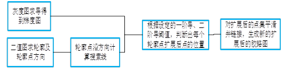
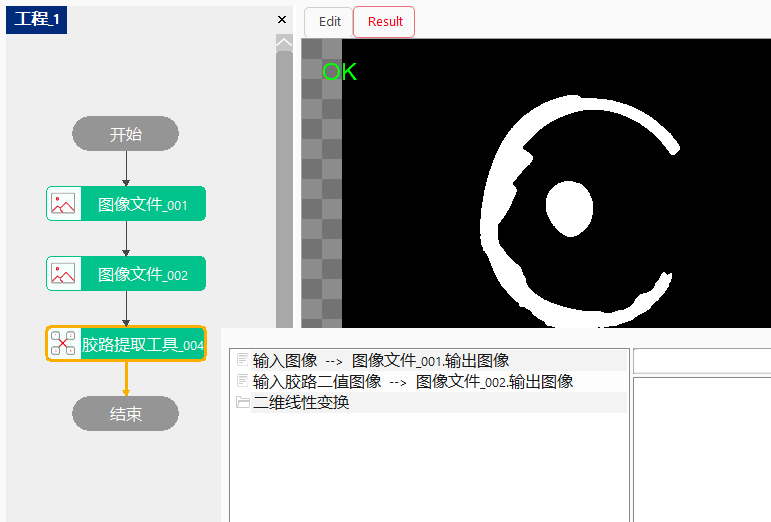

在胶路分割中，当胶水边缘颜色与胶水中心区域颜色色差较大的情况下，只提取胶水中心区域颜色，分割结果未包含胶路实际边缘区域，使得胶路分割结果与实际胶路相差较大。通过胶路提取工具，可以让胶路分割边缘逼近实际边缘，使得结果更加准确。
（1）对输入的灰度图每个像素点求导得到对应的梯度图；（2）计算输入二值图的轮廓及每个轮廓点的方向，根据设定的搜索线长度沿每个轮廓点的方向生成搜索线；（3）沿搜索线在梯度图上根据设定的一阶导、二阶导阈值，判断出每个轮廓点扩展后点的位置；（4）对扩展后的点集平滑并链接，生成新的扩展后的胶路图。

| 分类 | 参数名称 | 参数描述 |
|---|---|---|
| 属性窗口 | 是否使用ROI | 是否启用ROI，若为否，则为全图提取。 |
| ROI区域 | 目前只支持矩形ROI区域。 | |
| 矩形ROI | 矩形ROI的具体区域 | |
| 轮廓点向外扩张最大距离 | 轮廓点向外扩张的最大距离，范围：[5, 1000], 建议值：60。 | |
| 中值滤波核半宽 | 中值滤波核半宽参数，范围：(1, 100], 建议值：20。 | |
| 高斯二阶导阈值 | 对图像求高斯二阶导阈值，范围：(0, 10], 建议值：0.5。 | |
| 高斯一阶导阈值 | 对图像求高斯一阶导阈值，范围：(0, 10], 建议值：0.4。 | |
| 图像求导平滑系数 | 对图像求导的平滑系数，范围：(0, 10], 建议值：3。 | |
| 开启并行运算 | 是否开启并行运算，选择是时，算法将开启OpenMp并行计算方式，可以提升计算速度，但可能出现耗时不稳定的情况，选择否时，算法将关闭OpenMp并行计算。 | |
| 线程数百分比 | 设置并行运算的线程数百分比，有效范围为 (0, 0.75]，对应表示(0%, 75%]百分比范围。 | |
| 数据链 | 输入图像 | 未点胶的输入图像，只支持灰度图像。 |
| 输入胶路二值图像 | 点胶后进过处理的二值图像，只支持灰度图像。 | |
| 二维线性变换 | 输入的定位二维线性变换结果，以根据其变换相应的ROI区域 |
| 参数名称 | 参数说明 |
|---|---|
| 输出图像 | 输出胶路二值图 |
| 执行结果 | 工具执行结果。 |
| 执行时间 | 工具执行时间。 |
使用时如下图所示，在全图情况下需要配置两个参数链——输入图像和输入胶路二值图像，两者可以从图像文件或者图像源配置中获取。输入图像需要的是未点胶的灰度图，输入胶路二值图需要的图像为：点胶后的RGB图中，用B通道减去G通道得到的二值图像。当开启ROI时二维线性变换参数需要链接几何定位工具的二维线性变换输出。属性栏参数采用默认值即可。 
参见“\Samples\胶路提取工具.gvp”。